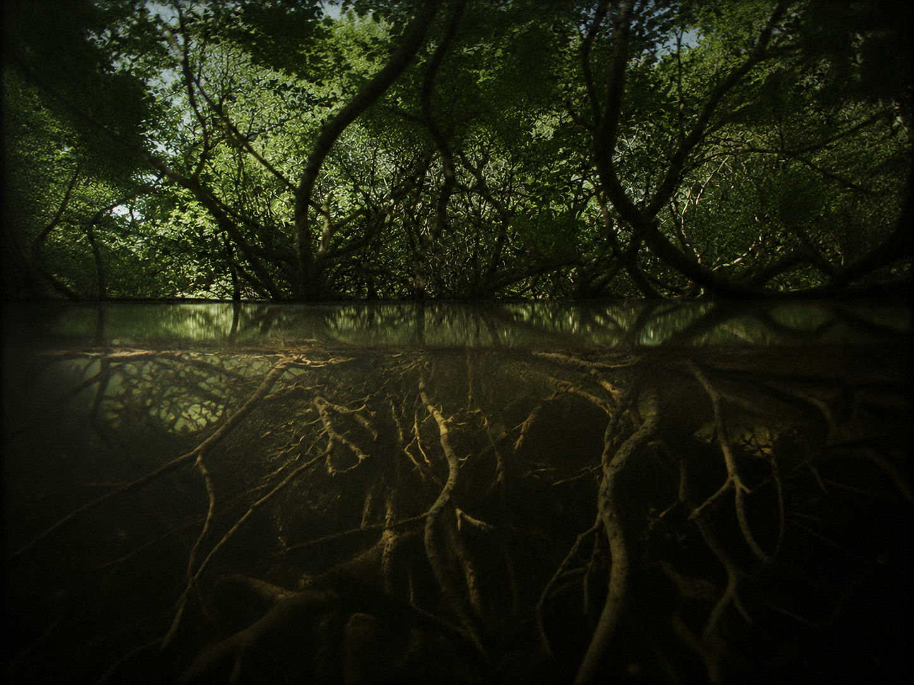

░░░░░░░░░░░░░░░░░░░░░░░░░░░░░░░░░░ · D E S C E N T · 23 / 40 · ░░░░░░░░░░░░░░░░░░░░░░░░░░░░░░░░░░

Quiet spreads over it like leaves. A roof of silence. A place to not be found. Down here the loud go to disappear.
burrow